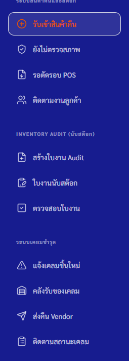
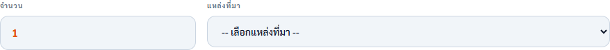
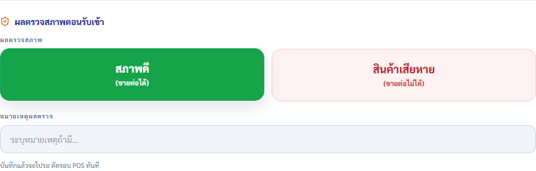
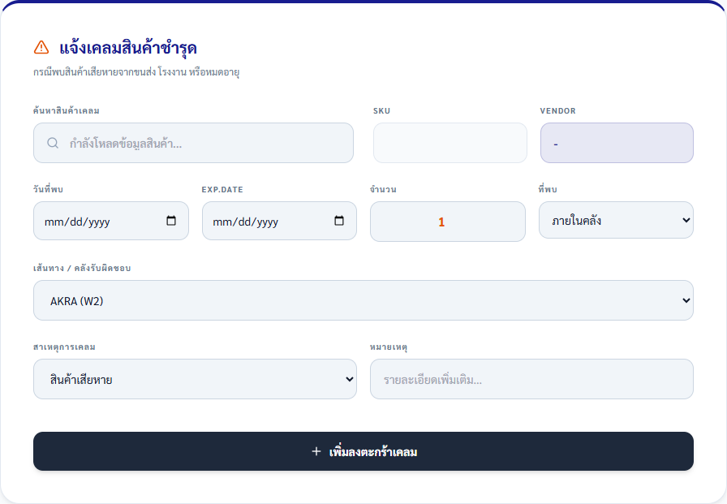
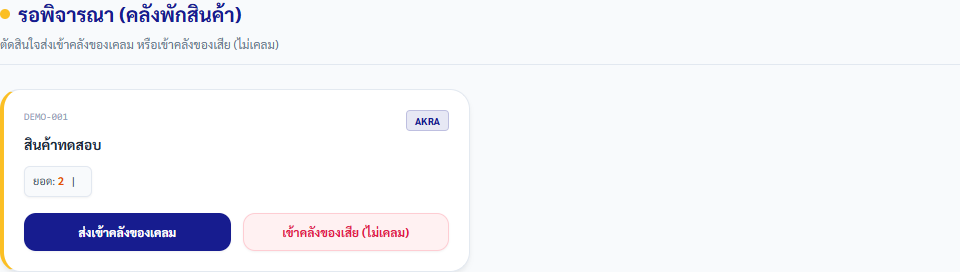
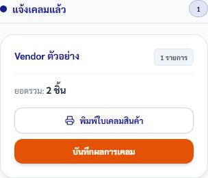
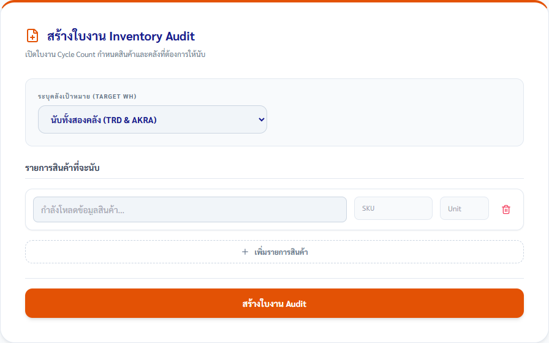

คู่มือพนักงาน · Returnitem — สินค้าคืน เคลม และ Audit
คู่มือรับคืน คัดสภาพ และส่งต่องาน Returnitem
รับสินค้าคืน ตรวจสภาพ และส่งต่อไป POS งานเคลม หรือ Inventory Audit ให้ตรงเส้นทางโดยไม่ข้ามการยืนยันของผู้รับผิดชอบ
ฉบับทดสอบภายใน: ใช้ตรวจขั้นตอนและความเข้าใจก่อนประกาศใช้
ส่วนที่ 1
เตรียมก่อนเริ่ม
- เปิด Returnitem ผ่าน Main Portal และใช้บัญชีของตนเอง
- เตรียมสินค้า จำนวน แหล่งที่มา เหตุผล เลขบิลหรือข้อมูลเคลมที่เกี่ยวข้อง
- ใช้เฉพาะเมนูที่ตรงกับหน้าที่และสิทธิ์ที่หัวหน้ามอบหมาย
- ตรวจหน้าประวัติหรือคิวงานก่อนทำรายการเดิมซ้ำ
เลือกเส้นทางจากข้อความที่เห็น
| ข้อความบนหน้าจอ | ความหมาย | ให้ทำต่อ |
|---|---|---|
| สินค้าคืนสภาพดีและขายต่อได้ | เส้นทางปกติของสินค้าคืน | เลือก “สภาพดี (ขายต่อได้)” เพื่อส่งไปรอ “ตัดรอบ POS” |
| สินค้าคืนเสียหายและขายต่อไม่ได้ | ต้องเข้าสายงานเคลม ไม่ใช่ POS | เลือก “สินค้าเสียหาย (ขายต่อไม่ได้)” ระบุจำนวนและหน่วยส่งเคลม แล้วส่งเข้าคลังเคลม |
| เป็นการตรวจนับคลังตามใบงาน | เป็น Inventory Audit แยกจากงานรับคืนประจำวัน | ใช้ “สร้างใบงาน Audit” → “ใบงานนับสต๊อก” → “ตรวจสอบใบงาน” ตามบทบาท |
ส่วนที่ 2
ทำตามขั้นตอน
-
ทุกบทบาท
เลือกคิวงานให้ตรงหน้าที่
ทำ: เปิดเมนูสินค้าคืน, Inventory Audit หรือระบบเคลมชำรุดที่ตรงกับงาน ห้ามใช้เมนูที่ไม่ได้รับมอบหมาย
เช็ก: หัวข้อหน้าจอตรงกับงานที่จะทำ และเห็นเฉพาะเมนูตามสิทธิ์บัญชี

เลือกคิวงานจากเมนูตามหน้าที่ของผู้ใช้ก่อนเริ่มกรอกข้อมูล ภาพอ้างอิง RETURNITEM 20260702.01 -
พนักงานรับคืน
ระบุสินค้า จำนวน และแหล่งที่มา
ทำ: เปิด “รับเข้าสินค้าคืน” เลือกสินค้าจากผลค้นหา ใส่จำนวนมากกว่า 0 แล้วเลือก “รับคืนหน้าร้าน/ลูกค้า” หรือ “ตีกลับออนไลน์ (Shopee/Lazada)”
เช็ก: รหัส SKU หน่วยนับ จำนวน และแหล่งที่มาครบ; กรณีหน้าร้านมีรายละเอียดลูกค้า เหตุผล การชดเชย และข้อมูลบิลตามงานจริง

กรอกจำนวนและเลือกแหล่งที่มาให้ตรงของจริง ระบบจะแสดงรายละเอียดต่อเนื่องตามเส้นทางที่เลือก ภาพอ้างอิง RETURNITEM 20260702.01 -
พนักงานรับคืนหรือ QC
ตรวจสภาพและเลือกเส้นทาง
ทำ: ตรวจสินค้าจริง แล้วเลือก “สภาพดี (ขายต่อได้)” หรือ “สินค้าเสียหาย (ขายต่อไม่ได้)” พร้อมหมายเหตุที่จำเป็น ก่อนกด “บันทึกเข้าคลังกักกัน”
เช็ก: สภาพดีขึ้น “รอตัดรอบ”; สินค้าเสียหายขึ้น “ส่งเคลมแล้ว” และมีจำนวน/หน่วยส่งเคลมครบ

ผลตรวจสภาพเป็นจุดแยกงานไป POS หรือคลังเคลม ต้องเลือกจากของจริง ภาพอ้างอิง RETURNITEM 20260702.01 -
ผู้รับผิดชอบ POS
ปิดรอบสินค้าสภาพดี
ทำ: เปิด “รอตัดรอบ POS” ตรวจรายการสภาพดีทั้งหมด แล้วใช้คำสั่งตัดรอบตามงานที่ได้รับมอบหมาย
เช็ก: รายการเปลี่ยนจาก “รอตัดรอบ” เป็น “ตัดรอบแล้ว” และดาวน์โหลดไฟล์ CSV ตามข้อความยืนยันของระบบ
งานสภาพดีไปที่ “รอตัดรอบ POS”; ตรวจรายการก่อนยืนยันเพราะคำสั่งเปลี่ยนสถานะทั้งชุด ภาพอ้างอิง RETURNITEM 20260702.01 -
ผู้แจ้งเคลม
สร้างรายการเคลมชำรุด
ทำ: เปิด “แจ้งเคลมชิ้นใหม่” เลือกสินค้า วันที่พบ จำนวน จุดที่พบ เส้นทางคลัง และสาเหตุ แล้วกด “เพิ่มลงตะกร้าเคลม”; ตรวจตะกร้าก่อนส่งข้อมูลทั้งหมด
เช็ก: รายการเคลมมี SKU, Vendor, จำนวน, เส้นทาง AKRA (W2) หรือ TRD (W1), สาเหตุ และผู้แจ้งครบ

กรอกข้อเท็จจริงของสินค้าเสียหายและเพิ่มลงตะกร้าเคลมก่อนส่งทั้งชุด ภาพอ้างอิง RETURNITEM 20260702.01 -
พนักงานคลังหรือหัวหน้าผู้พิจารณา
รับของเข้าคลังพักและคัดแยก
ทำ: ใน “คลังรับของเคลม” ผู้รับเข้าระบุโลเคชั่นและผู้รับ จากนั้นผู้พิจารณาเลือก “ส่งเข้าคลังของเคลม” หรือ “เข้าคลังของเสีย (ไม่เคลม)” ตามข้อเท็จจริง
เช็ก: รายการออกจาก “ยังไม่รับ” ไป “อยู่คลังพักสินค้า / รอพิจารณา” แล้วเข้าสายเคลมหรือปิดเป็นของเสียโดยไม่ปะปนกัน

การคัดแยกเป็นคำตัดสินของผู้รับผิดชอบ: เคลม Vendor หรือของเสียที่ไม่เคลม ภาพอ้างอิง RETURNITEM 20260702.01 -
ผู้ติดตามเคลม
ส่งเรื่องและบันทึกผล Vendor
ทำ: เปิด “ติดตามสถานะเคลม” ตรวจ Vendor และยอดรวม ใช้ “พิมพ์ใบเคลมสินค้า” ตามงาน แล้วบันทึกผลการเคลมและปิดงานเมื่อได้รับผลจริง
เช็ก: สถานะเดินตามลำดับที่เกี่ยวข้อง: “รอเคลม” → “แจ้งเคลมแล้ว” → “รอรับสินค้าใหม่” หรือ “เคลมแล้ว/สำเร็จแล้ว”

บันทึกผลจาก Vendor กับรายการเดิม ไม่สร้างงานเคลมซ้ำ ภาพอ้างอิง RETURNITEM 20260702.01 -
ผู้สร้างใบงาน ผู้ตรวจนับ และผู้ทบทวน Audit
ทำ Inventory Audit ตามบทบาท
ทำ: ผู้มีสิทธิ์เลือกคลังและสินค้าใน “สร้างใบงาน Audit”; ผู้ตรวจนับทำรายการใน “ใบงานนับสต๊อก”; ผู้ทบทวนตรวจผลต่างแล้ว Finalize ใน “ตรวจสอบใบงาน”
เช็ก: ใบงานแสดงผลนับของ TRD/AKRA ครบตามคลังเป้าหมาย และปิดงานหลังตรวจสาเหตุผลต่างแล้วเท่านั้น

Audit เป็นงานตามรอบและแยกบทบาทสร้าง นับ และตรวจสอบ ห้าม Finalize ก่อนผลนับครบ ภาพอ้างอิง RETURNITEM 20260702.01
ส่วนที่ 3
เช็กก่อนจบงาน
งานเสร็จเมื่อครบทั้ง 5 ข้อ
- สินค้าคืนมี SKU จำนวน แหล่งที่มา เหตุผล และผลตรวจสภาพตรงของจริง
- สินค้าสภาพดีอยู่ “รอตัดรอบ” หรือ “ตัดรอบแล้ว”; สินค้าเสียหายอยู่ในสายงานเคลม
- รายการเคลมมีผู้รับเข้า โลเคชั่น Vendor และสถานะล่าสุดที่ตรวจสอบย้อนกลับได้
- Audit ปิดเมื่อผลนับและสาเหตุผลต่างครบเท่านั้น
- ไม่พบรายการซ้ำหรือรายการที่ไม่แน่ใจว่าบันทึกแล้ว
ส่วนที่ 4
แก้ปัญหาที่พบบ่อย
เลือกข้อความที่ตรงกับหน้าจอ แล้วทำตามทีละข้อ
ระบบให้เลือกสินค้า แหล่งที่มา หรือกรอกจำนวนใหม่
- เลือกสินค้าจากรายการค้นหา ไม่พิมพ์ชื่ออย่างเดียว
- ตรวจจำนวนให้มากกว่า 0 และเลือกแหล่งที่มา
- กรณีเลือก “อื่น ๆ” ให้กรอกรายละเอียดในช่องที่เปิดเพิ่ม
กดบันทึกแล้วโหลดนานหรือไม่แน่ใจว่าบันทึกสำเร็จ
- อย่ากดปุ่มเดิมซ้ำทันที
- เปิด Dashboard, ประวัติ หรือคิวงานที่ควรรับช่วงต่อ แล้วค้นหารายการเดิม
- ถ้าสถานะยังไม่ชัดเจน ให้หยุดและแจ้งหัวหน้า
ไม่มีเมนูหรือระบบแจ้ง “บัญชีนี้ไม่มีสิทธิ์ทำรายการนี้”
- อย่าใช้บัญชีของบุคคลอื่น
- เปิดระบบใหม่ผ่าน Main Portal
- แจ้งหัวหน้าให้ตรวจบทบาทหรือสิทธิ์เมนูที่ตรงกับหน้าที่
เห็นข้อความว่ามีเวอร์ชันใหม่
- หยุดทำรายการและกดรีโหลดตามข้อความ
- เปิดคิวงานเดิมใหม่และตรวจสถานะล่าสุดก่อนทำต่อ
ต้องเปลี่ยนสินค้าจากเคลมเป็นของเสีย หรือบันทึกผลตอบรับ Vendor
- ให้ผู้รับผิดชอบตรวจสินค้าและหลักฐานก่อนเลือกเส้นทาง
- ใช้รายการเดิมใน “คลังรับของเคลม” หรือ “ติดตามสถานะเคลม”
- ห้ามลบหรือสร้างรายการใหม่เพื่อเปลี่ยนสถานะ
ใบงาน Audit กำลังถูกนับโดยบุคคลอื่นหรือผลนับไม่ครบ
- อย่าเริ่มนับซ้อนหรือ Finalize
- ตรวจผู้ที่กำลังนับและคลังเป้าหมาย
- ประสานผู้รับผิดชอบใบงานก่อนดำเนินการต่อ
- ระบบให้เลือกสินค้า แหล่งที่มา หรือกรอกจำนวนใหม่
-
- เลือกสินค้าจากรายการค้นหา ไม่พิมพ์ชื่ออย่างเดียว
- ตรวจจำนวนให้มากกว่า 0 และเลือกแหล่งที่มา
- กรณีเลือก “อื่น ๆ” ให้กรอกรายละเอียดในช่องที่เปิดเพิ่ม
- กดบันทึกแล้วโหลดนานหรือไม่แน่ใจว่าบันทึกสำเร็จ
-
- อย่ากดปุ่มเดิมซ้ำทันที
- เปิด Dashboard, ประวัติ หรือคิวงานที่ควรรับช่วงต่อ แล้วค้นหารายการเดิม
- ถ้าสถานะยังไม่ชัดเจน ให้หยุดและแจ้งหัวหน้า
- ไม่มีเมนูหรือระบบแจ้ง “บัญชีนี้ไม่มีสิทธิ์ทำรายการนี้”
-
- อย่าใช้บัญชีของบุคคลอื่น
- เปิดระบบใหม่ผ่าน Main Portal
- แจ้งหัวหน้าให้ตรวจบทบาทหรือสิทธิ์เมนูที่ตรงกับหน้าที่
- เห็นข้อความว่ามีเวอร์ชันใหม่
-
- หยุดทำรายการและกดรีโหลดตามข้อความ
- เปิดคิวงานเดิมใหม่และตรวจสถานะล่าสุดก่อนทำต่อ
- ต้องเปลี่ยนสินค้าจากเคลมเป็นของเสีย หรือบันทึกผลตอบรับ Vendor
-
- ให้ผู้รับผิดชอบตรวจสินค้าและหลักฐานก่อนเลือกเส้นทาง
- ใช้รายการเดิมใน “คลังรับของเคลม” หรือ “ติดตามสถานะเคลม”
- ห้ามลบหรือสร้างรายการใหม่เพื่อเปลี่ยนสถานะ
- ใบงาน Audit กำลังถูกนับโดยบุคคลอื่นหรือผลนับไม่ครบ
-
- อย่าเริ่มนับซ้อนหรือ Finalize
- ตรวจผู้ที่กำลังนับและคลังเป้าหมาย
- ประสานผู้รับผิดชอบใบงานก่อนดำเนินการต่อ
ส่วนที่ 5
หยุดและแจ้งหัวหน้าเมื่อ
- ไม่แน่ใจว่าสินค้าคืนควรไป POS เคลม หรือคลังของเสีย
- พบรายการเดิมซ้ำหรือไม่แน่ใจว่าบันทึกสำเร็จ
- ต้องตัดรอบ ปิดเคลม ลบรายการ หรือ Finalize Audit โดยไม่มีหน้าที่
- ผลนับจริงไม่ตรงระบบและยังไม่มีสาเหตุหรือผู้อนุมัติ